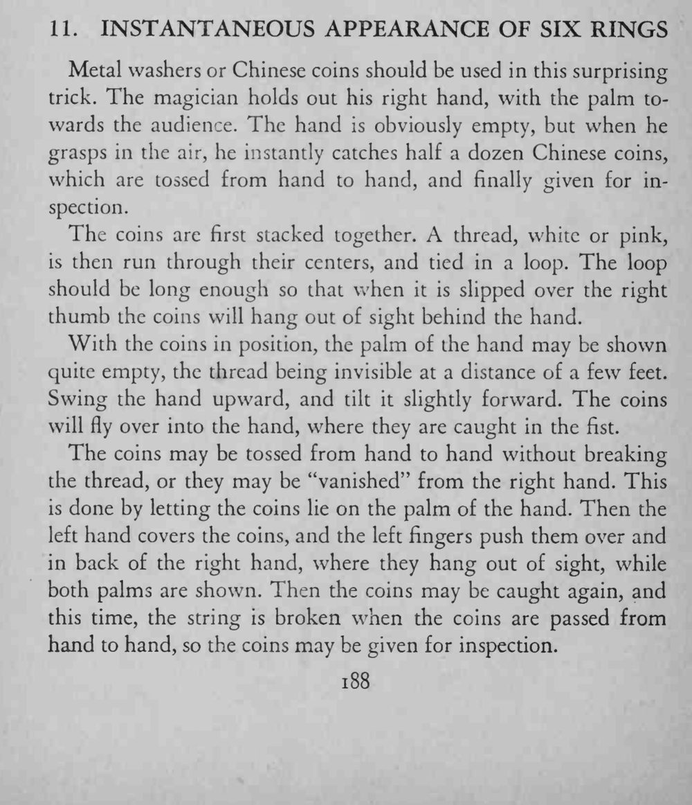

魔术师摊开右手，掌心明明空无一物，朝空中一抓却瞬间抓出六枚铜钱；铜钱在两手间抛来抛去，最后还能交给观众检查。
线要细、颜色贴近肤色，观众离得近时手不要久停。

Metal washers or Chinese coins should be used in this surprising trick. The magician holds out his right hand, with the palm towards the audience. The hand is obviously empty, but when he grasps in the air, he instantly catches half a dozen Chinese coins, which are tossed from hand to hand, and finally given for inspection. The coins are first stacked together. A thread, white or pink, is then run through their centers, and tied in a loop. The loop should be long enough so that when it is slipped over the right thumb the coins will hang out of sight behind the hand. With the coins in position, the palm of the hand may be shown quite empty, the thread being invisible at a distance of a few feet. Swing the hand upward, and tilt it slightly forward. The coins will fly over into the hand, where they are caught in the fist. The coins may be tossed from hand to hand without breaking the thread, or they may be "vanished" from the right hand. This is done by letting the coins lie on the palm of the hand. Then the left hand covers the coins, and the left fingers push them over and in back of the right hand, where they hang out of sight, while both palms are shown. Then the coins may be caught again, and this time, the string is broken when the coins are passed from hand to hand, so the coins may be given for inspection.